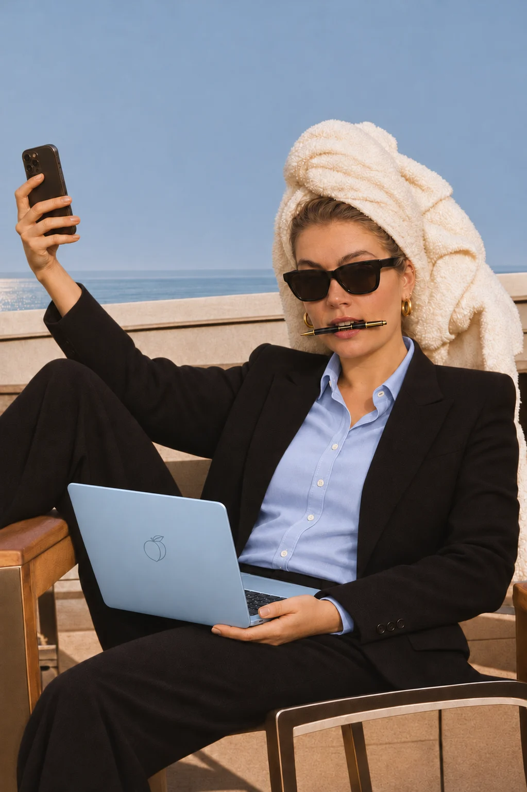

על עצמי
היי, אני אנה.

אנה מילנטייב
אני מנהלת אופרציה, וגם בחיים אוהבת לדייק, לשפר ולמצוא מה עובד טוב יותר, מתהליכים ומתכונים ועד הרגלים והתפתחות אישית.
אני אוהבת אסתטיקה, אוכל טעים וטיולים, וכאן משתפת דברים שאני יוצרת, מנסה ואוהבת.
עוד קצת עליי, בקרוב.